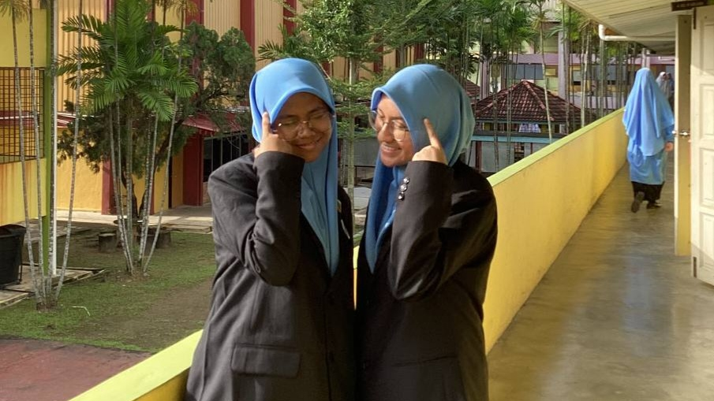
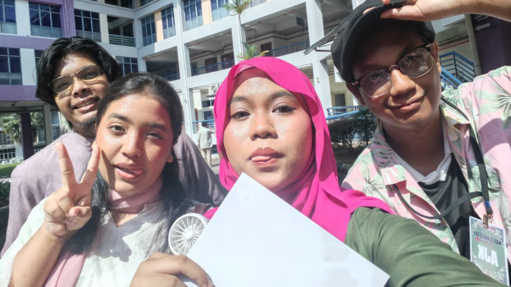

NGO involvement
Workshop Coordinator · Impian Kencana
Role summary
- Supported the planning and coordination of educational and community-based workshops.
- Assisted workshop logistics, participant communication and programme requirements.
- Helped ensure activities were organised according to the intended schedule.
- Strengthened programme coordination, communication, teamwork, organisation and facilitation skills.
Moments



